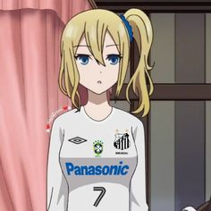
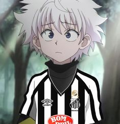
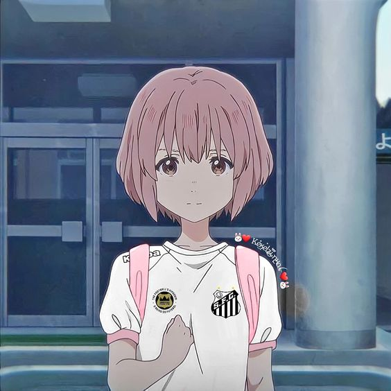

Anime Santos |
|||
| Home | Sobre | Contato | Ajuda |
Personagems de animes com vestimenta do time do Santos
Imagens de personagems de animes com camisas do Santos andam aparecendo muito em perfils de redes sociais de adolecentes.Por que disso?
Os outros 30% dos entrevistados disseram que fazem isso para honrar sua religião chamada "Santistas4ever"
Sou alvinegro da Vila Belmiro
O Santos vive no meu coração
É o motivo de todo o meu riso
De minhas lágrimas e emoção
Sua bandeira no mastro é a história
De um passado e um presente só de glórias
Nascer, viver e no Santos morrer
É um orgulho que nem todos podem ter
No Santos pratica-se o esporte
Com dignidade e com fervor
Seja qual for a sua sorte
De vencido ou vencedor
Com técnica e disciplina
Dando o sangue com amor
Pela bandeira que ensina
Lutar com fé e com ardor
|
 |
||
|
 |
|||
|
 |
|||
| Copyright © 13/10/2022 Lucas Montes de Oliveira | |||